# # resolve package conflicts
# filter <- dplyr::filter
# select <- dplyr::selectClustering and Linear Regression
Clustering Methods in R
Setup / Install libraries (only once)
# install.packages("tidyverse")
# install.packages("viridis")Install the broom package. This package summarizes model information, so it’s going to be very useful to make the clustering data easier to work with, but it’ll be especially useful when we review statistics.
# install.packages('broom')Install the pheatmap package. ggplot2 doesn’t really do heatmaps, so you need a different plotting package.
# install.packages('pheatmap')Load libraries
library(tidyverse)── Attaching core tidyverse packages ──────────────────────── tidyverse 2.0.0 ──
✔ dplyr 1.1.4 ✔ readr 2.1.6
✔ forcats 1.0.1 ✔ stringr 1.6.0
✔ ggplot2 4.0.1 ✔ tibble 3.3.1
✔ lubridate 1.9.4 ✔ tidyr 1.3.2
✔ purrr 1.2.1
── Conflicts ────────────────────────────────────────── tidyverse_conflicts() ──
✖ dplyr::filter() masks stats::filter()
✖ dplyr::lag() masks stats::lag()
ℹ Use the conflicted package (<http://conflicted.r-lib.org/>) to force all conflicts to become errorslibrary(viridis)Loading required package: viridisLitelibrary(broom)
library(pheatmap)To demonstrate all of the clustering methods, we’ll use the iris dataset again. There’s an underlying variable, Species, that explains some of the variation in the data. We’ll see if the clustering methods can recover the three species.
ggplot(iris, aes(x = Sepal.Width, y = Sepal.Length, color = Species)) +
geom_point(size = 3) +
labs(x = 'Sepal Width (cm)', y = 'Sepal Length (cm)') +
theme_classic() +
theme(axis.title = element_text(size = 14), legend.title = element_text(size = 14))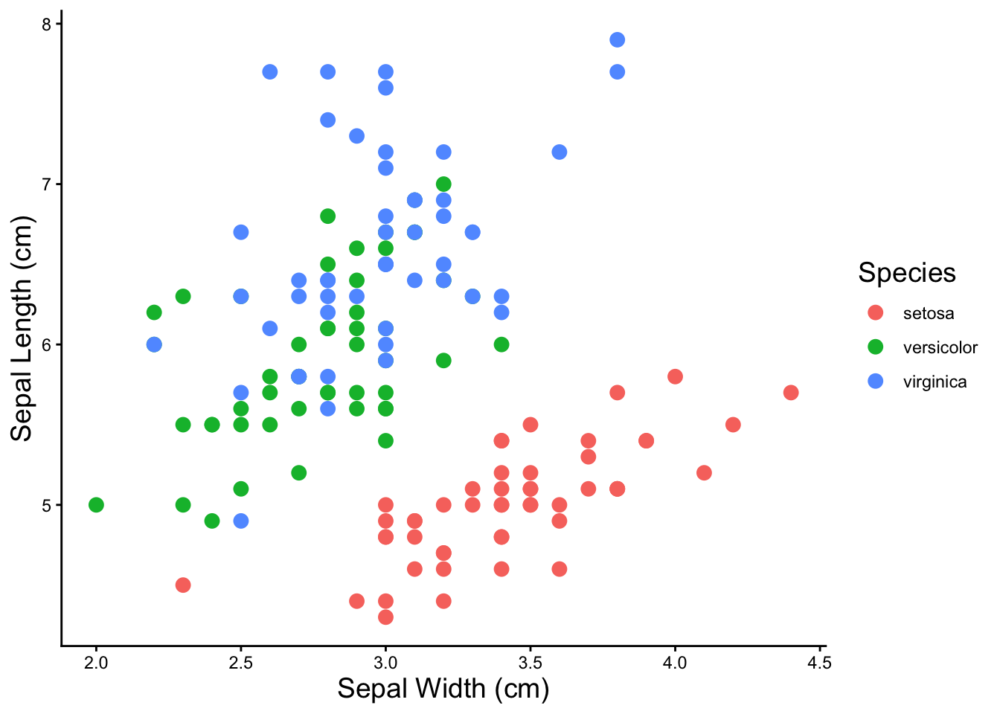
kmeans
For kmeans clustering, we have to pick the number of clusters we want. All of clustering methods only work on numeric data, so you have to remove any categorical variables before running the clustering function.
iris %>% select(-Species) %>% kmeans(4)K-means clustering with 4 clusters of sizes 50, 32, 40, 28
Cluster means:
Sepal.Length Sepal.Width Petal.Length Petal.Width
1 5.006000 3.428000 1.462000 0.246000
2 6.912500 3.100000 5.846875 2.131250
3 6.252500 2.855000 4.815000 1.625000
4 5.532143 2.635714 3.960714 1.228571
Clustering vector:
[1] 1 1 1 1 1 1 1 1 1 1 1 1 1 1 1 1 1 1 1 1 1 1 1 1 1 1 1 1 1 1 1 1 1 1 1 1 1
[38] 1 1 1 1 1 1 1 1 1 1 1 1 1 3 3 3 4 3 4 3 4 3 4 4 4 4 3 4 3 4 4 3 4 3 4 3 3
[75] 3 3 3 3 3 4 4 4 4 3 4 3 3 3 4 4 4 3 4 4 4 4 4 3 4 4 2 3 2 2 2 2 4 2 2 2 3
[112] 3 2 3 3 2 2 2 2 3 2 3 2 3 2 2 3 3 2 2 2 2 2 3 3 2 2 2 3 2 2 2 3 2 2 2 3 3
[149] 2 3
Within cluster sum of squares by cluster:
[1] 15.151000 18.703437 13.624750 9.749286
(between_SS / total_SS = 91.6 %)
Available components:
[1] "cluster" "centers" "totss" "withinss" "tot.withinss"
[6] "betweenss" "size" "iter" "ifault" The broom package functions transforms special model objects like “kmeans” objects into tables that you can do further work with. The itdy() function transforms the model results into a table.
iris %>% select(-Species) %>% kmeans(4) %>% tidy()# A tibble: 4 × 7
Sepal.Length Sepal.Width Petal.Length Petal.Width size withinss cluster
<dbl> <dbl> <dbl> <dbl> <int> <dbl> <fct>
1 5.37 3.8 1.52 0.276 17 2.63 1
2 4.82 3.24 1.43 0.230 33 5.43 2
3 5.90 2.75 4.39 1.43 62 39.8 3
4 6.85 3.07 5.74 2.07 38 23.9 4 But we don’t really care about the model parameters, what we want is the cluster assignments with the original data so we can plot the clusters. The augment() function does this
iris_kmeans4 <- iris %>% select(-Species) %>% kmeans(4) %>% augment(iris)
iris_kmeans4 %>% head()# A tibble: 6 × 6
Sepal.Length Sepal.Width Petal.Length Petal.Width Species .cluster
<dbl> <dbl> <dbl> <dbl> <fct> <fct>
1 5.1 3.5 1.4 0.2 setosa 4
2 4.9 3 1.4 0.2 setosa 2
3 4.7 3.2 1.3 0.2 setosa 2
4 4.6 3.1 1.5 0.2 setosa 2
5 5 3.6 1.4 0.2 setosa 4
6 5.4 3.9 1.7 0.4 setosa 4 And let’s visualize the clusters we just created!
ggplot(iris_kmeans4, aes(x = Petal.Width,
y = Petal.Length,
color = .cluster)) +
geom_point(size = 3) +
labs(x = 'Petal Width (cm)',
y = 'Petal Length (cm)',
color = 'cluster') +
theme_classic() +
theme(axis.title = element_text(size = 14),
legend.title = element_text(size = 14))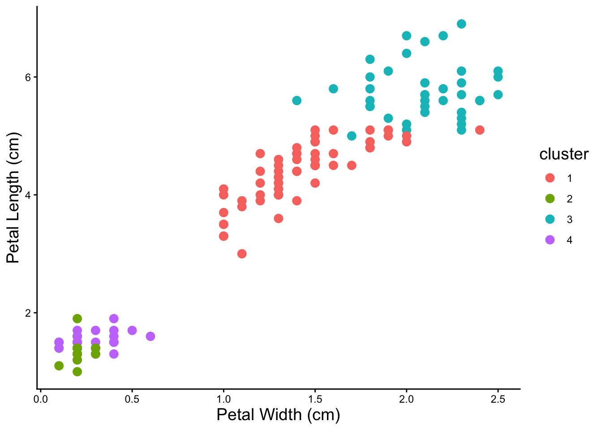
Notice that clusters can overlap. Also it looks like from the visualization that four is probably not the correct number of clusters.
Test Different Kmeans Cluster Numbers
Because you don’t know the correct number of kmeans clusters, we test a bunch of them. By running many kmeans and picking the kmeans with the fewest number of clusters with the best fit, we can do a little better than just guessing.
# drop the categorial columns from the data
iris_num <- iris %>% select(-Species)
### do a bunch of kmeans
# make a table of numbers of clusters
kmeans_params <- tibble(k = 2:15) %>%
# map is a function that creates nested tables or other objects within tables
# it will allow us to keep the kmeans results in the table
mutate(kclust = map(k, ~ kmeans(iris_num, .)),
# get the model parameters using broom::glance() and map() to apply it over our
# nested kmeans clustering
kclust = map(kclust, ~ glance(.))) %>%
# use unnest to turn the models back into a normal table
unnest(kclust)
kmeans_params %>% head()# A tibble: 6 × 5
k totss tot.withinss betweenss iter
<int> <dbl> <dbl> <dbl> <int>
1 2 681. 152. 529. 1
2 3 681. 78.9 603. 2
3 4 681. 57.2 624. 3
4 5 681. 46.5 635. 3
5 6 681. 41.7 640. 3
6 7 681. 47.0 634. 3# plot to see the inflection point and pick number of clusters
kmeans_params %>%
mutate(group = 1) %>% # just do this (add a grouping variable) to make geom_line() happy
ggplot(aes(x = as.factor(k), y = tot.withinss, group = group)) +
geom_point(size = 3) +
geom_line(size = 1) +
labs(x = 'Number of Clusters', y = 'Goodness of Fit \n (within cluster sum of squares)') +
theme_classic() +
theme(axis.title = element_text(size = 14))Warning: Using `size` aesthetic for lines was deprecated in ggplot2 3.4.0.
ℹ Please use `linewidth` instead.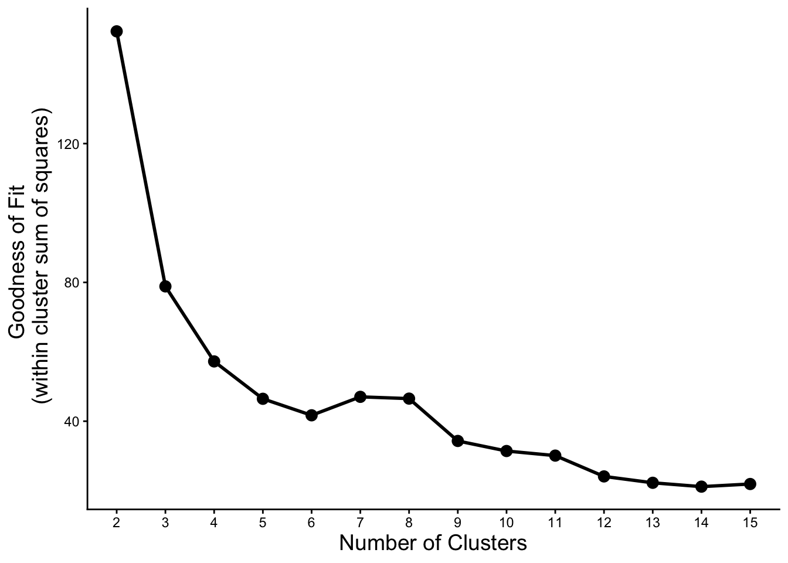
Let’s try some of the numbers of clusters where we see an inflection point from the plot above.
### kmeans with three clusters
iris %>%
select(-Species) %>%
kmeans(2) %>%
augment(iris) %>%
ggplot(aes(x = Sepal.Width, y = Sepal.Length,
color = .cluster, shape = Species)) +
geom_point(size = 3) +
labs(x = 'Sepal Width (cm)', y = 'Sepal Length (cm)', color = 'cluster') +
theme_classic() +
theme(axis.title = element_text(size = 14), legend.title = element_text(size = 14))
### kmeans with six clusters
iris %>%
select(-Species) %>%
kmeans(10) %>%
augment(iris) %>%
ggplot(aes(x = Sepal.Width, y = Sepal.Length,
color = .cluster, shape = Species)) +
geom_point(size = 3) +
labs(x = 'Sepal Width (cm)', y = 'Sepal Length (cm)', color = 'cluster') +
theme_classic() +
theme(axis.title = element_text(size = 14), legend.title = element_text(size = 14))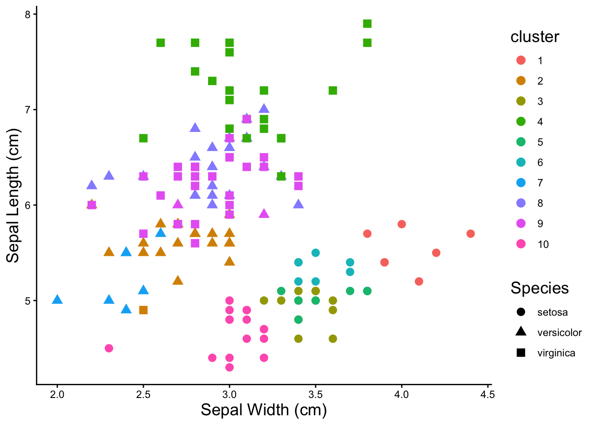
Three clusters does a pretty good job of finding the species of the irises.
Heatmaps
The Basics
To plot a heatmap with pheatmap(), all that’s needed is a completely numeric table. Row and column names will become labels in the heatmap.
pheatmap(iris[,1:4])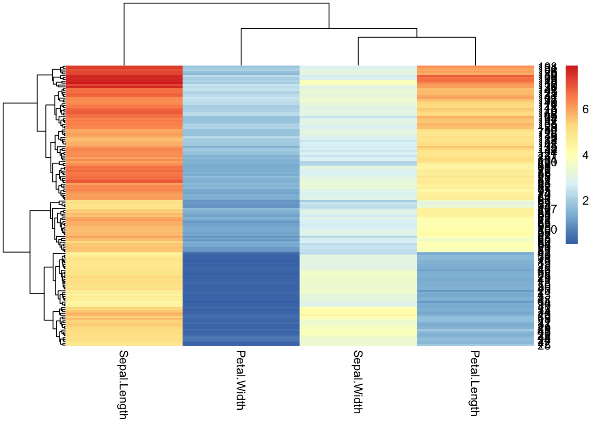
iris %>%
# drop the species column because it's not numeric
select(-Species) %>%
# plot the heatmap
pheatmap(.)
NOTE: The problem of rownames
### rownames
iris %>%
mutate(sample_id = paste0('sample', 1:150)) %>%
column_to_rownames('sample_id') %>%
head() Sepal.Length Sepal.Width Petal.Length Petal.Width Species
sample1 5.1 3.5 1.4 0.2 setosa
sample2 4.9 3.0 1.4 0.2 setosa
sample3 4.7 3.2 1.3 0.2 setosa
sample4 4.6 3.1 1.5 0.2 setosa
sample5 5.0 3.6 1.4 0.2 setosa
sample6 5.4 3.9 1.7 0.4 setosaModifying Appearance
Before playing with the appearance, save the data as a modified table that’s in the correct format for pheatmap()
iris_num <- iris %>%
select(-Species)Drop the row names pheatmap tries to label each individual row. 99% of the time there are so many rows that this is unreadable and looks terrible. You can tell pheatmap not to label them.
pheatmap(iris_num,
show_rownames = F)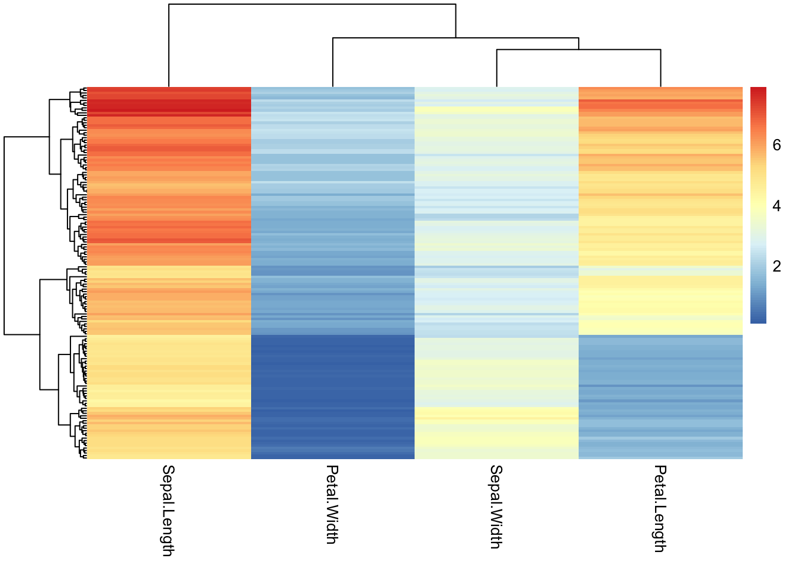
Change the color palette for the heatmap by supplying a different R color palette to the color argument.
### use an existing color palette like viridis
pheatmap(iris_num,
show_rownames = F,
color = viridis(50))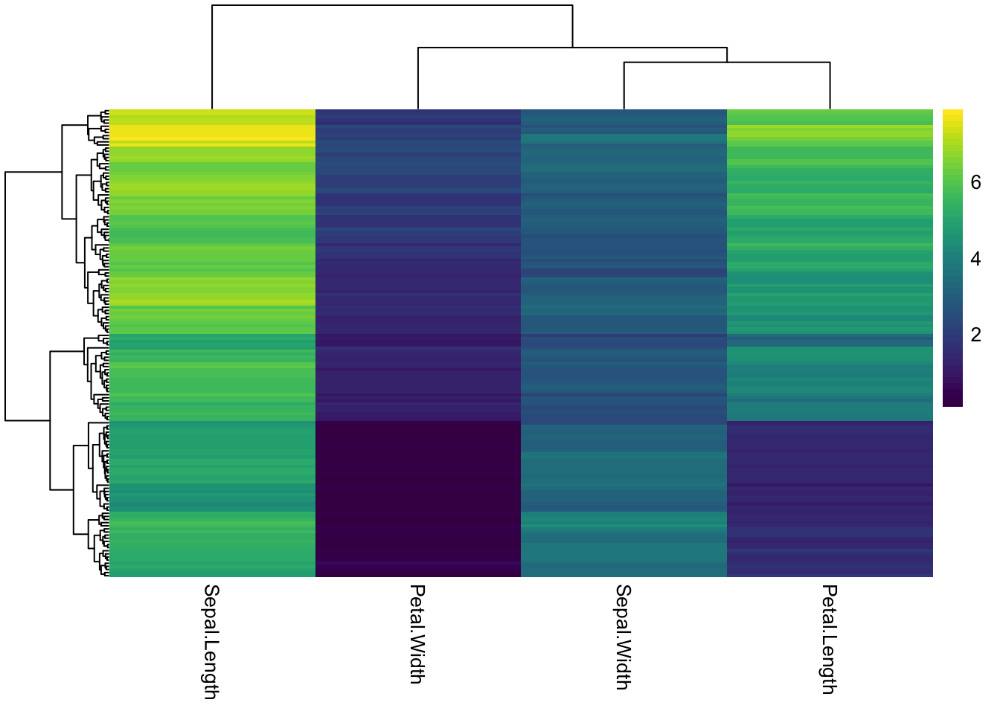
### changing the number after the palette changes how many colors/breaks there are in the scale
pheatmap(iris_num,
show_rownames = F,
color = viridis(5))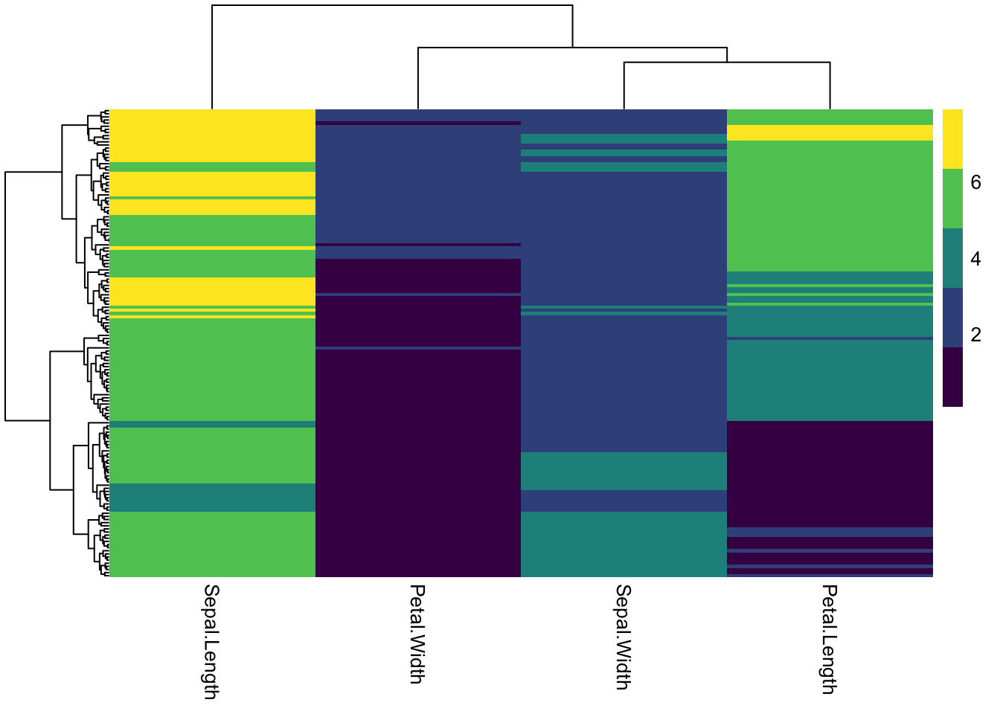
### pick colors for high, medium, low
# colorRampPalette takes a list of colors and makes them into a continuous palette
pheatmap(iris_num,
show_rownames = F,
color = colorRampPalette(c("dodgerblue", "gold", "orangered"))(50))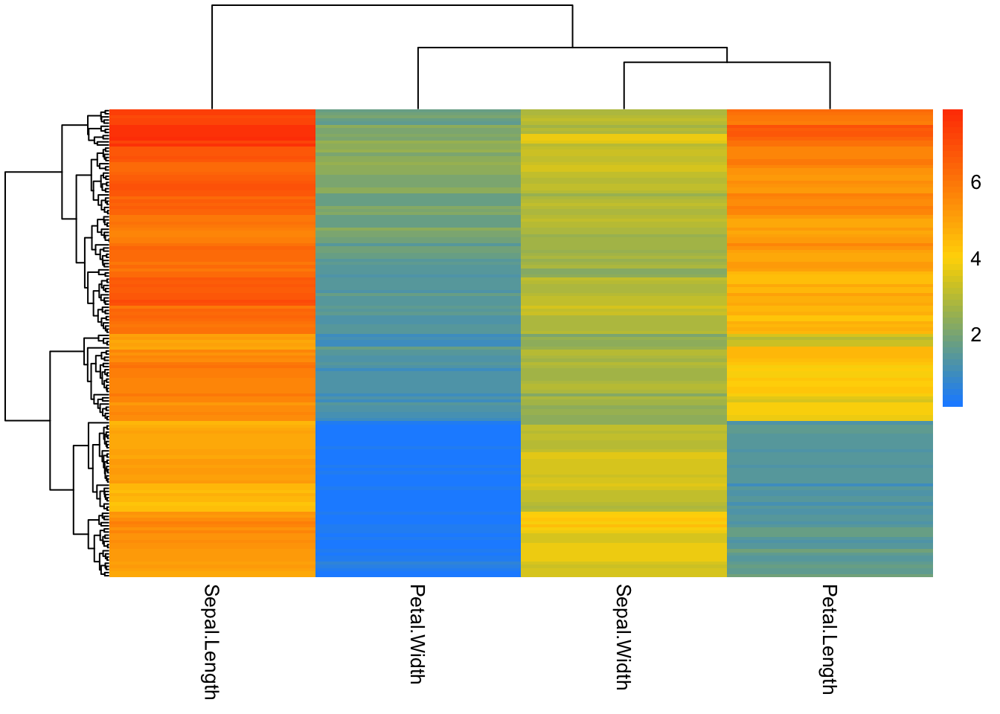
# add rownames to dataset
iris_sample_names <- iris %>%
mutate(sample_id = paste0('sample', 1:nrow(.))) %>%
column_to_rownames('sample_id')
iris_sample_names %>% head() Sepal.Length Sepal.Width Petal.Length Petal.Width Species
sample1 5.1 3.5 1.4 0.2 setosa
sample2 4.9 3.0 1.4 0.2 setosa
sample3 4.7 3.2 1.3 0.2 setosa
sample4 4.6 3.1 1.5 0.2 setosa
sample5 5.0 3.6 1.4 0.2 setosa
sample6 5.4 3.9 1.7 0.4 setosa#transpose data
iris_transpose <- iris_sample_names %>%
select(-Species) %>%
t()
iris_transpose %>% as.data.frame() %>% .[,1:8] sample1 sample2 sample3 sample4 sample5 sample6 sample7 sample8
Sepal.Length 5.1 4.9 4.7 4.6 5.0 5.4 4.6 5.0
Sepal.Width 3.5 3.0 3.2 3.1 3.6 3.9 3.4 3.4
Petal.Length 1.4 1.4 1.3 1.5 1.4 1.7 1.4 1.5
Petal.Width 0.2 0.2 0.2 0.2 0.2 0.4 0.3 0.2iris_transpose %>%
pheatmap()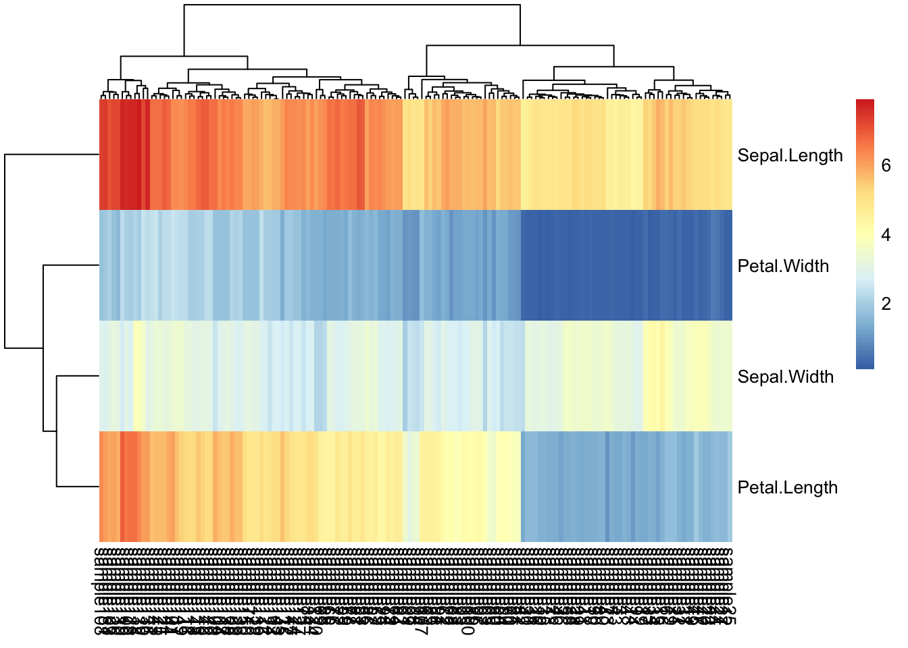
iris_transpose %>%
pheatmap(
color = viridis(10),
show_rownames = T,
show_colnames = F)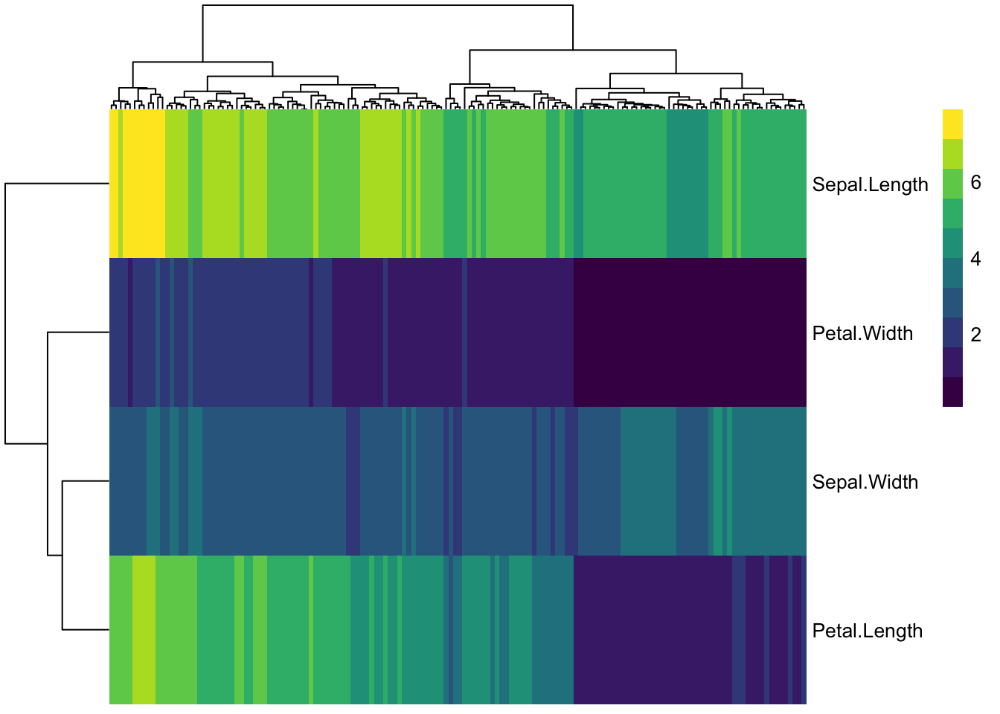
col_anno <- select(iris_sample_names, Species)
col_anno %>% head() Species
sample1 setosa
sample2 setosa
sample3 setosa
sample4 setosa
sample5 setosa
sample6 setosaanno_colors <- list(Species = c(setosa = 'forestgreen',
versicolor = 'red3',
virginica = 'navyblue'))
my_color = colorRampPalette(c("navy", "white", "firebrick3"))(50)
iris_transpose %>%
pheatmap(cutree_cols = 3,
annotation_col = col_anno,
# annotation_colors = anno_colors,
color = my_color,
show_rownames = F,
show_colnames = F)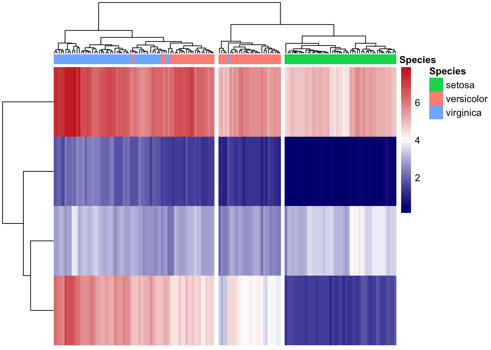